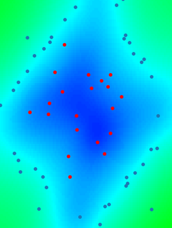

ot-AK documentation
{kind=link}
otAK is a module of OpenTURNS implementing some methods for combining Kriging and reliability methods. The different methods are: AK-MCS for Monte-Carlo Simulation, AK-IS for Importance Sampling and AK-SS for Subset Simulation. The AK methods are built on top of OpenTURNS and consist in training a Kriging metamodel to avoid expensive simulations.
AK methods involve dedicated infill criterion to refine the Kriging models only in the area that are relevant to the reliability problem (in the vicinity of limit state and on area with high probabilistic content).
Theory
User documentation
Examples
References
Echard, B., Gayton, N., & Lemaire, M. (2011). AK-MCS: an active learning reliability method combining Kriging and Monte Carlo simulation. Structural Safety, 33(2), 145-154.
Echard, B. (2012). Assessment by kriging of the reliability of structures subjected to fatigue stress, Université Blaise Pascal, PhD thesis
Huan (2016). Assessing small failure probabilities by AK–SS: An active learning method combining Kriging and Subset Simulation, Structural Safety 59 (2016) 86–95